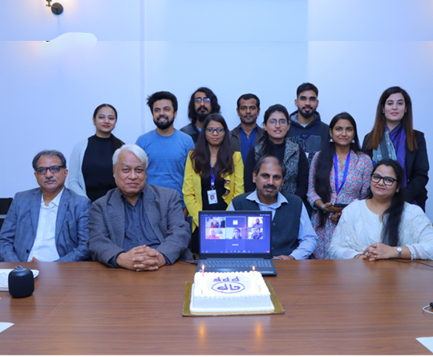
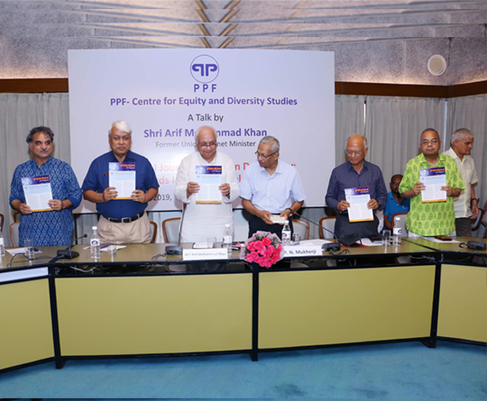
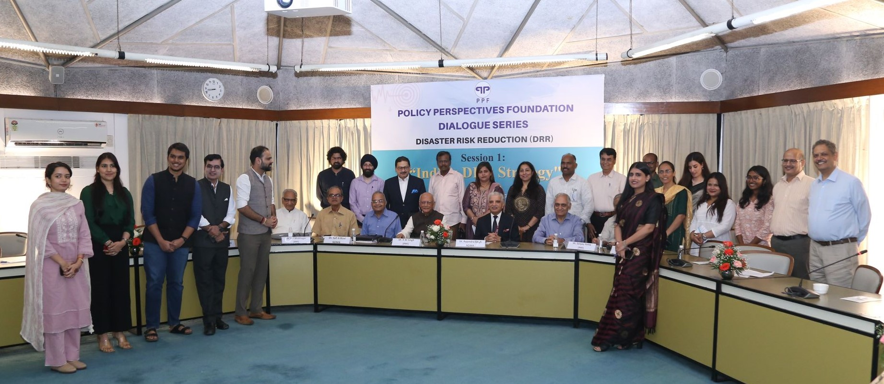
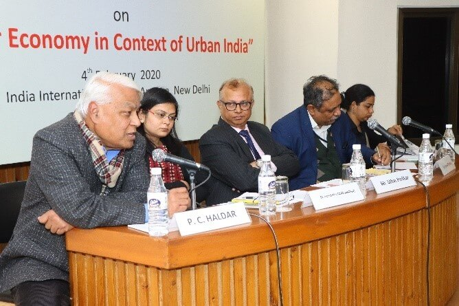
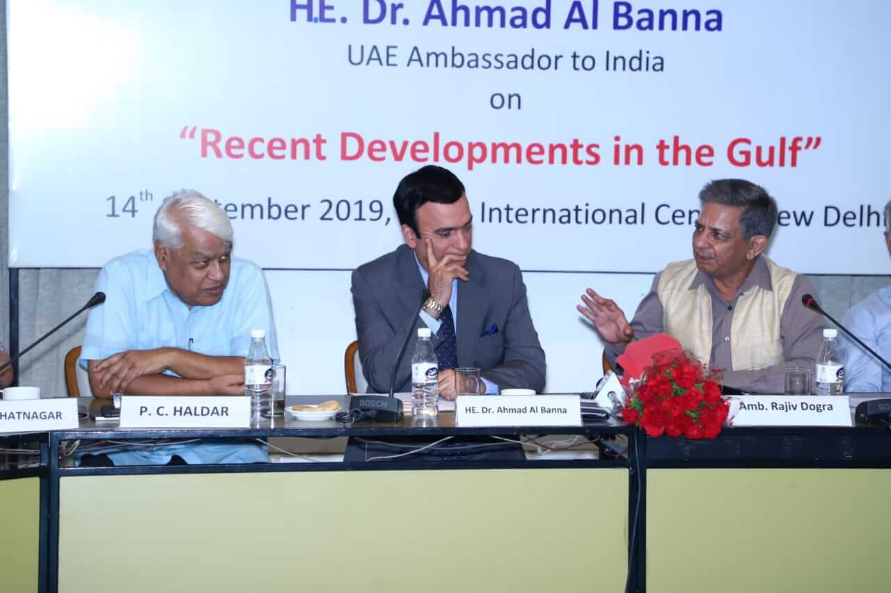
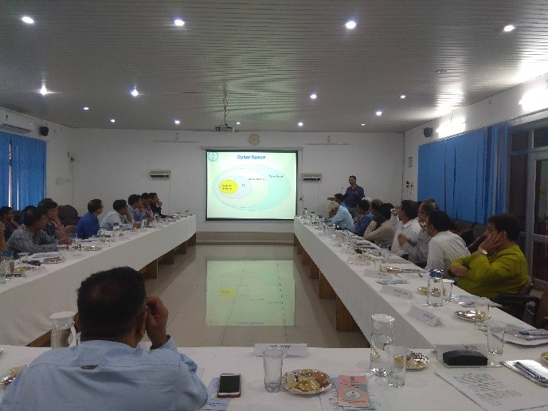
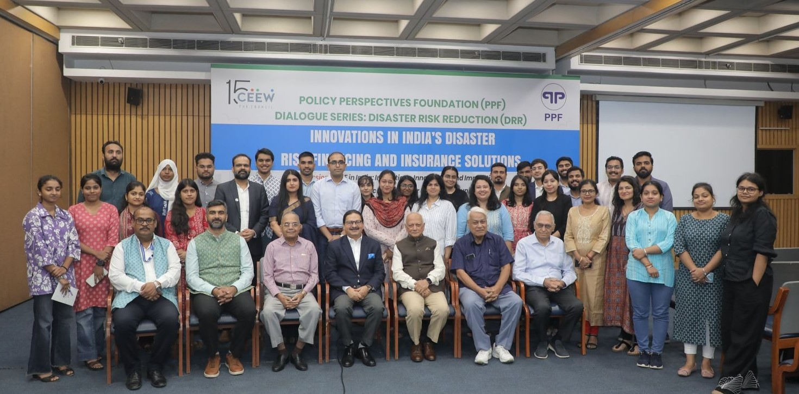
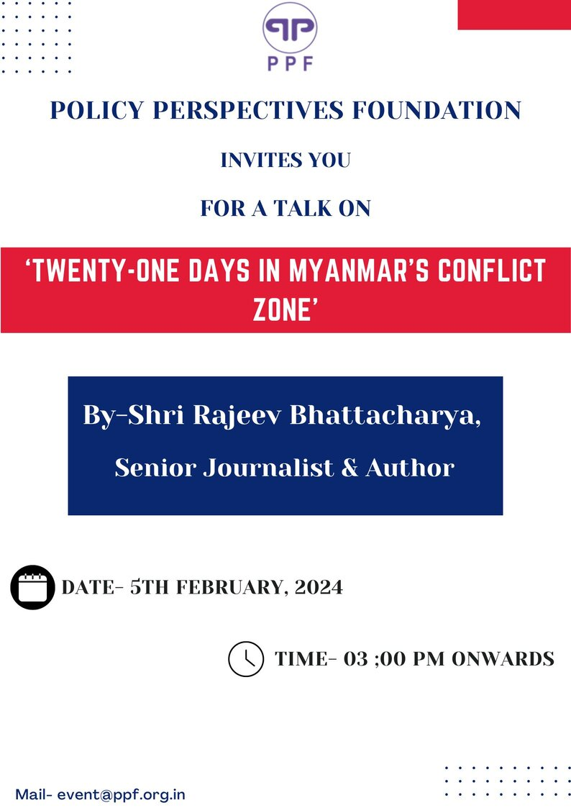
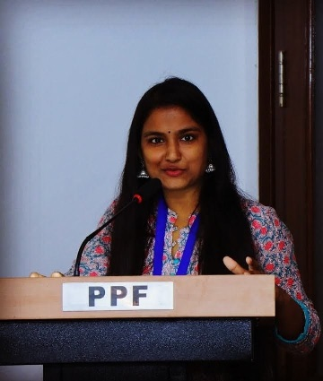
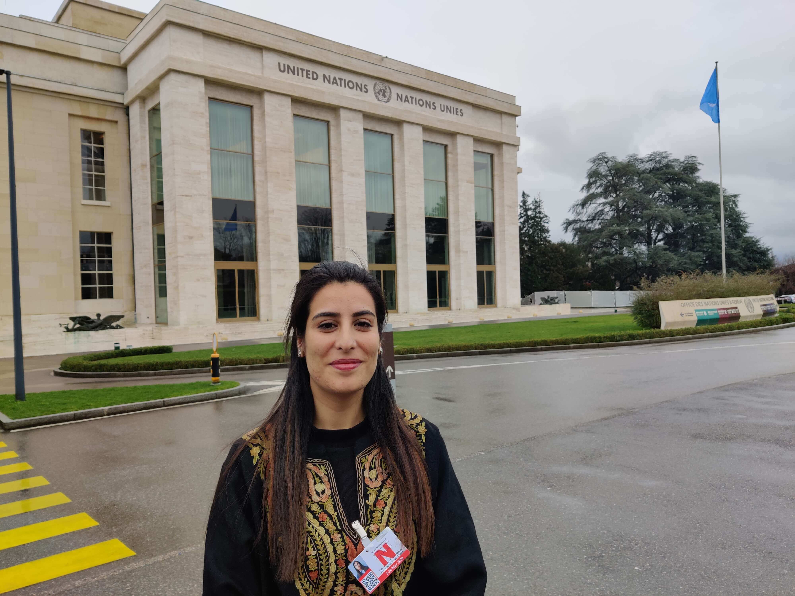

Evidence-Based Research for a Resilient Nation.
An apolitical think-tank dedicated to strategic dialogue, developmental advocacy, and national security insights.

An apolitical think-tank dedicated to strategic dialogue, developmental advocacy, and national security insights.
A multi-year research initiative exploring the systemic challenges and rehabilitation pathways for women within India's criminal justice system.
Read the Full Report
The Policy Perspectives Foundation (PPF) was founded in 2005 as a non-profit and apolitical think-tank on matters of national interest. The organisation’s activities focus on complex and inter-connected challenges to internal peace, stability and development in India.
It promotes debates and dialogues with scholars, development practitioners, civil society, government organisations and other stakeholders, and implements training, research and advocacy programmes on issues of national interest. The activities of PPF broadly fall under three categories namely capacity building, generation of awareness and social resilience. The organisation draws its strength from its founding members who are experts in the domains of strategic affairs, internal security, sociology, communication, management and governance.


Exploring the intersection of cultural heritage and sustainable economic models.

Analyzing the security implications of shifting geopolitical alliances in the Middle East.

Empirical evidence for improving community resilience in the Himalayan periphery.
Bilateral dialogue on gender equity held in Bali with South East Asian stakeholders.

Formulating India's national disaster risk reduction path at IIC, New Delhi.

Reviewing cross-border conflict dynamics and internal stability challenges.
Distinguished fellows and researchers driving the foundation's academic rigor.
Distinguished Fellow


Established as a non-profit in 2005, PPF has pioneered apolitical research in national security and social stability. Our mission is to produce evidence-driven insights that empower policymakers and stakeholders.